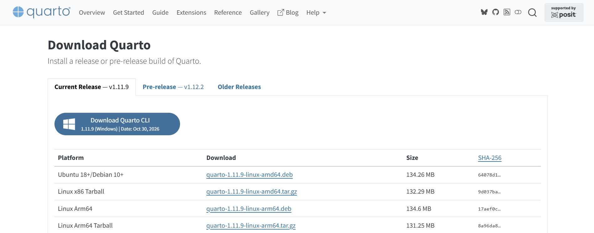
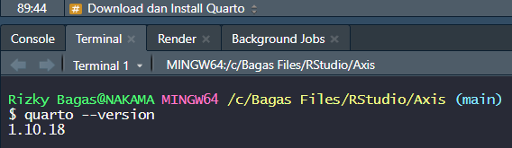
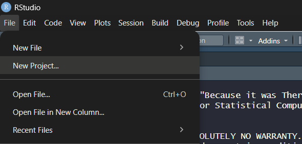
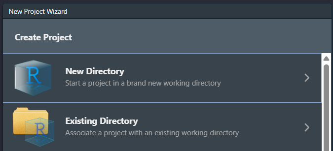
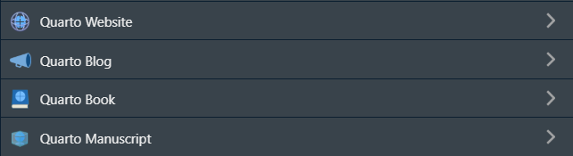
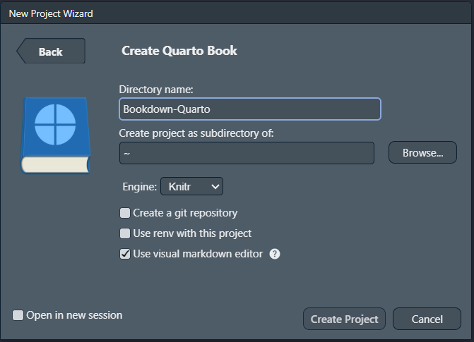
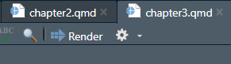

Bagaimana Membuat Format Bookdown di RStudio
Berbeda dengan Bookdown yang menggunakan R Markdown (.Rmd), pada tutorial ini kita akan menggunakan format .qmd dan konfigurasi Quarto melalui file _quarto.yml.
1 Gambaran tutorial
NoteCatatan
Quarto sebenarnya memiliki fitur Book Project sendiri. Jadi, kita akan menggunakan Quarto Book, yaitu pendekatan yang menghasilkan buku digital dengan navigasi bab seperti tampilan tutorial yang kamu tunjukkan.
1.1 Download dan Install Quarto
Quarto → perangkat lunak yang digunakan untuk mengolah file .qmd menjadi dokumen HTML, PDF, website, maupun buku digital.
NoteCara Instalasi
- Buka browser (Chrome atau browser lainnya).
- Kunjungi website resmi Quarto: Download Quarto.
- Pilih installer sesuai sistem operasi. Karena menggunakan Windows, pilih Windows Installer (.msi).
- Tunggu sampai proses download selesai.
- Buka file installer yang sudah diunduh.
- Ikuti proses instalasi dengan menekan tombol Next hingga selesai.
- Setelah instalasi selesai, Quarto sudah bisa digunakan.

1.2 Pastikan Quarto Terintegrasi dengan RStudio
Setelah Quarto berhasil diinstal, langkah berikutnya adalah memastikan RStudio dapat mengenali Quarto.
TipCek Quarto di RStudio
- Buka aplikasi RStudio.
- Pilih menu Tools → Terminal → New Terminal.
- Ketik perintah berikut:
quarto --version
- Tekan Enter.
- Jika berhasil, terminal akan menampilkan nomor versi Quarto yang terinstal.
1.10.18

Jika nomor versi muncul, berarti Quarto sudah berhasil terinstal dan dapat dikenali oleh sistem.
WarningPerhatikan
Jika muncul pesan quarto is not recognized, tutup dan buka kembali RStudio. Jika masih terjadi, periksa instalasi dan PATH Quarto di Windows.
Packages yang perlu di install:
- Bookdown
- Quarto
1.3 Membuat Projek Baru
Selanjutnya, kita akan membuat project khusus untuk menyimpan seluruh file buku digital.
TipLangkah-langkah
- Buka RStudio
- Klik menu File → New Project.

- Pilih New Directory.

- Pilih Quarto Book Project jika tersedia pada versi RStudio yang digunakan.

- Isi nama project, misalnya:

- Tentukan lokasi penyimpanan project.
- Klik Create Project.
Setelah project berhasil dibuat, RStudio akan membuka project tersebut secara otomatis.
WarningPerhatikan
Jika pilihan Quarto Book tidak tersedia, kita tetap bisa membuat project kosong melalui New Directory, kemudian menambahkan konfigurasi Quarto secara manual pada tahap berikutnya.
1.4 Render Digital Book
Setelah semua file selesai dibuat, langkah selanjutnya adalah melakukan proses Render untuk mengubah seluruh file .qmd menjadi buku digital berbentuk HTML.
TipCara Render
- Buka salah satu file
.qmddi RStudio. - Klik tombol Render pada bagian atas Source Editor.
- Tunggu sampai proses selesai.
- Hasil dokumen akan ditampilkan melalui Viewer atau browser sesuai pengaturan RStudio.
